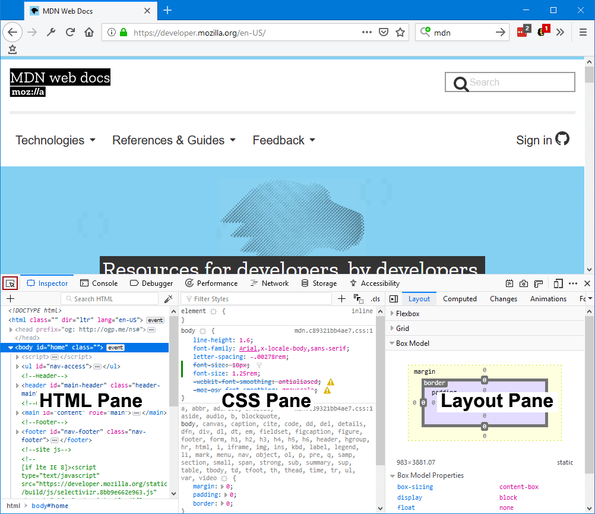
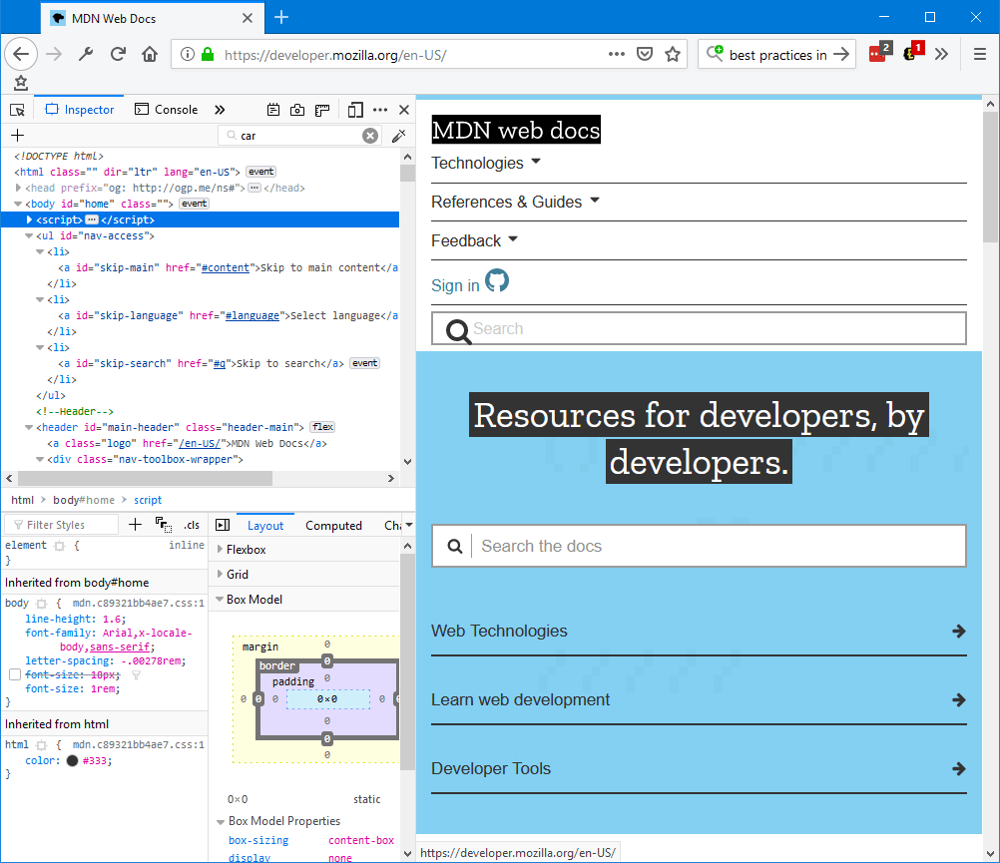
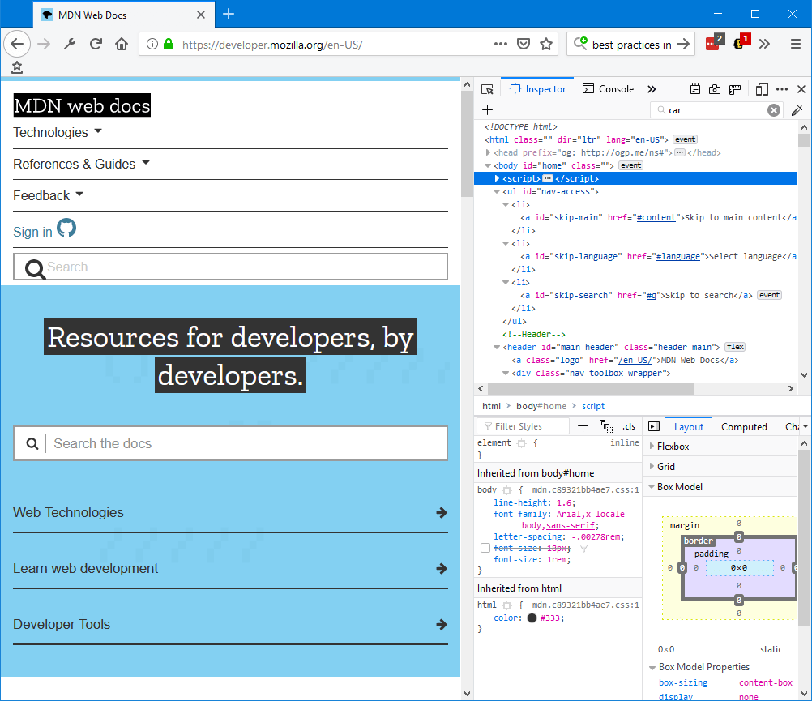
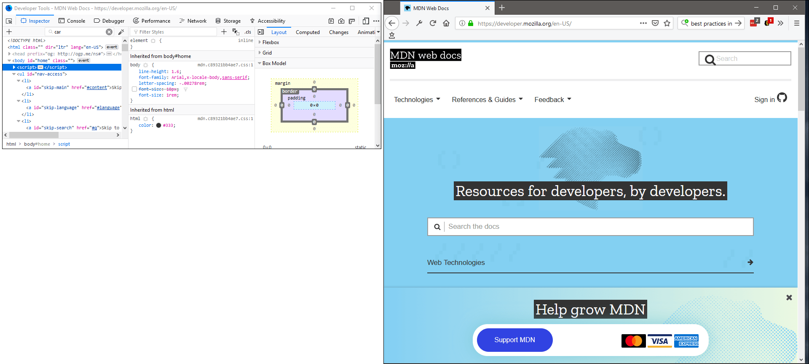

There are two main ways to open the Inspector:
The Inspector will appear at the bottom of the browser window:

You can also set the pane to appear at the left side of the browser window:

To the right side of the browser window:

Or in a separate window:

To start finding your way around the Inspector, see the UI tour.